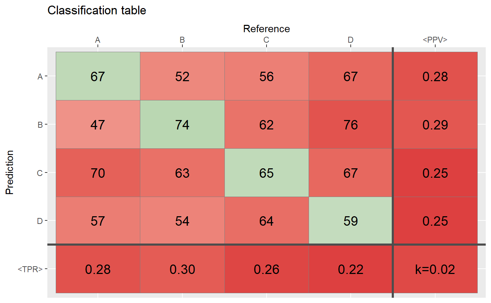
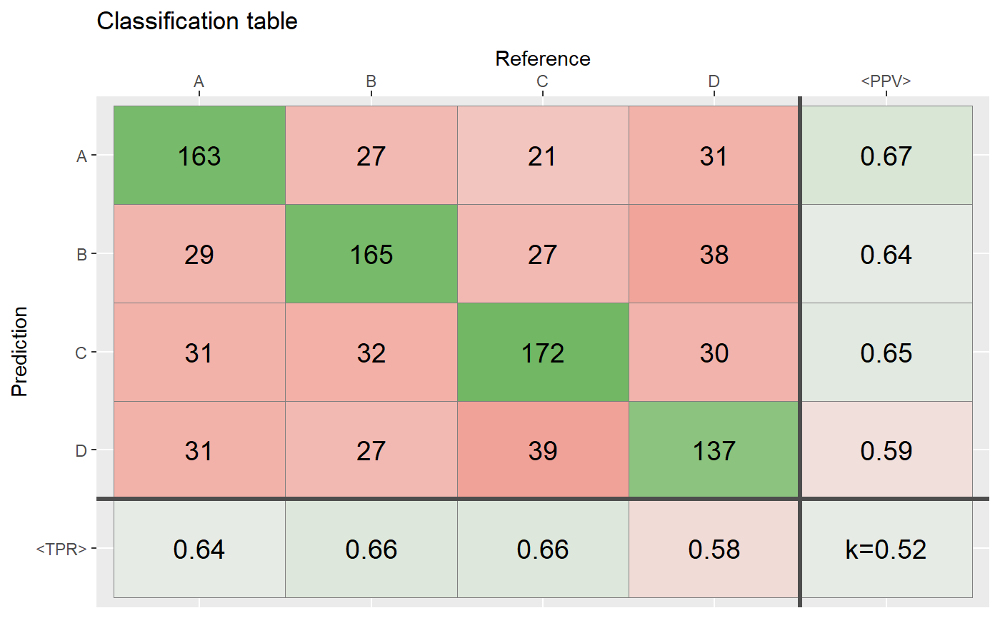
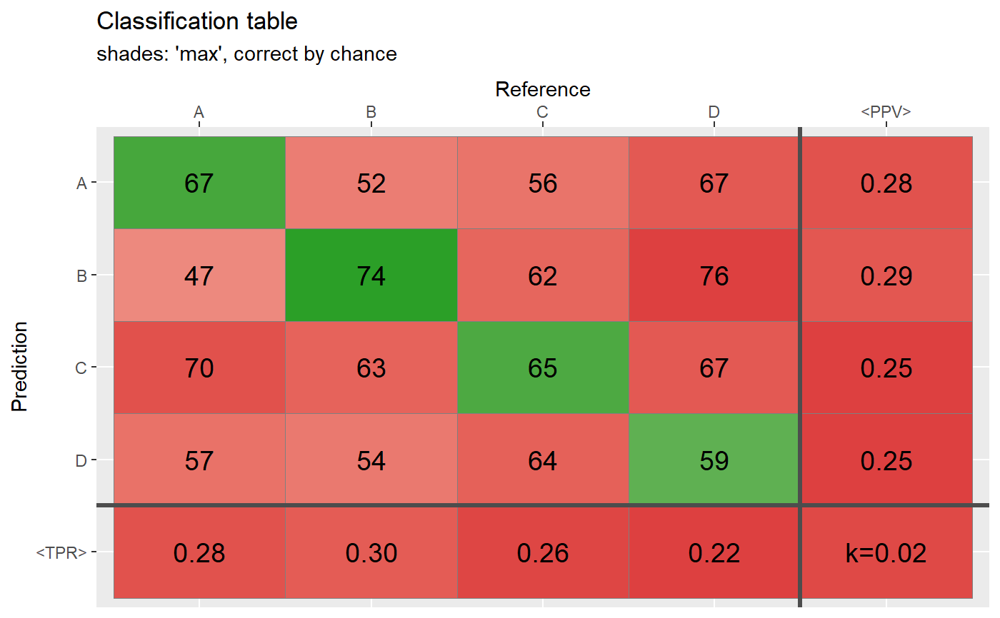
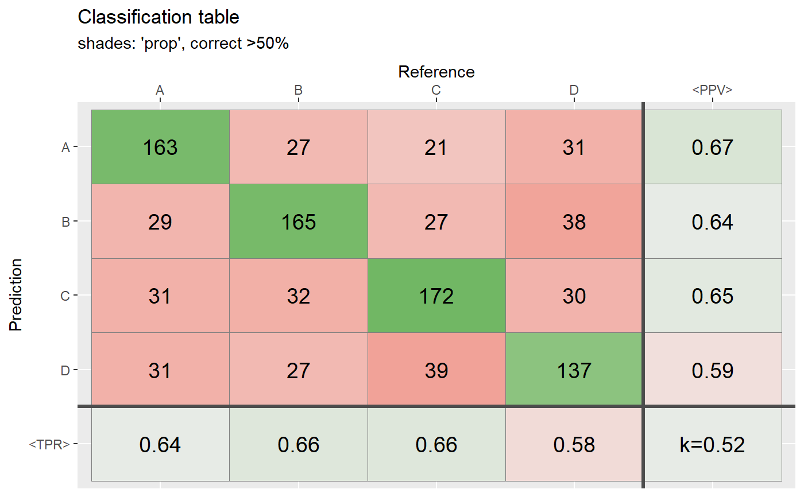
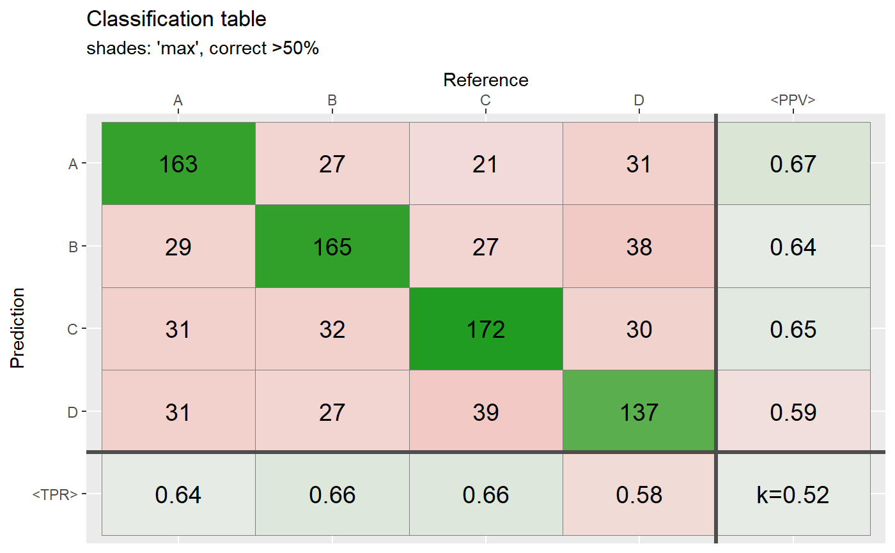
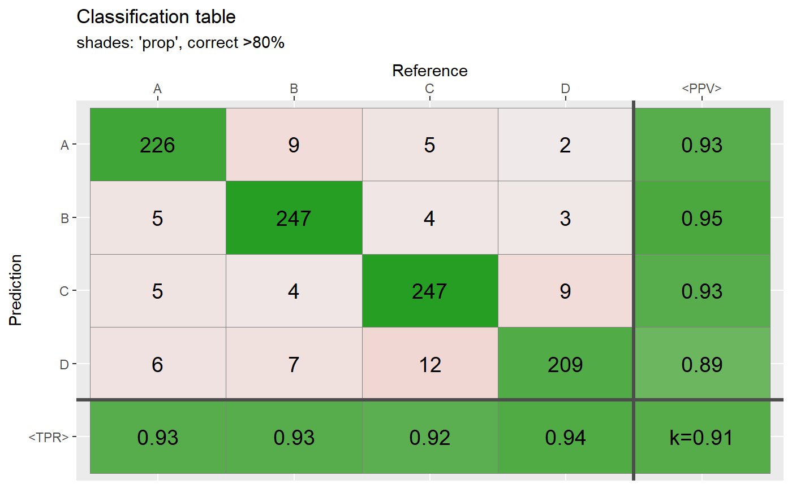
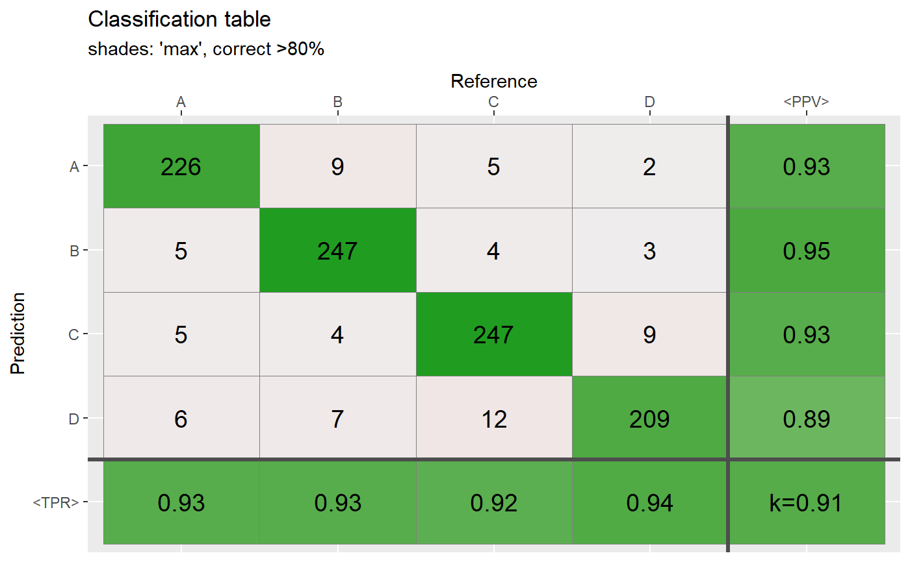
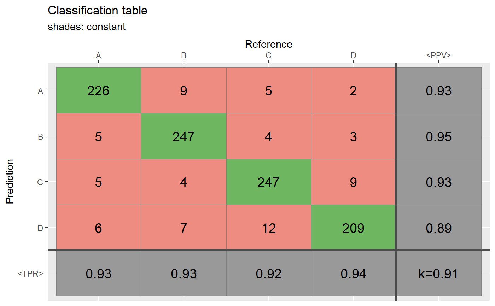

[!+] Plot a confusion matrix (a.k.a. classification table)
qplot_confusion.RdPlot a confusion matrix (classification table) with
additional statistics (sensitivity (Se) a.k.a. true positive
rate, positive predictive value (PPV) and Cohens' Kappa (k)).
Colors in the main matrix: diagonal cells vary from grey to
green and offdiagonal elements vary from grey to
red. The color intensity in certain cell is determined by
parameter shades.
Colors of cells with statistics Se, PPV and k vary depening on
values of these statistics from red (low values) to
grey (middle values), to green (high values).
Exception: when shades="const" and shades="none",
color intensities are constant.
qplot_confusion(...) # S3 method for default qplot_confusion( Prediction, Reference, Title = "Classification table", xLabel = NULL, yLabel = NULL, subTitle = NULL, shades = c("prop", "max", "const", "none"), guide = FALSE, text.size = 5, decimals = 2, ... ) # S3 method for matrix qplot_confusion(mat, ...) # S3 method for ResampleResult qplot_confusion(obj, ...) # S3 method for PredictionClassif qplot_confusion(obj, ...) # S3 method for table qplot_confusion( conf, Title = "Classification table", xLabel = NULL, yLabel = NULL, subTitle = NULL, shades = c("prop", "max", "const", "none"), guide = FALSE, text.size = 5, decimals = 2, TPR.name = "<TPR>", PPV.name = "<PPV>", sort = c(FALSE, "diagonal", "PPV", "TPR"), metric = c("kappa", "weighted.kappa", "meanTPR", "meanPPV") )
Arguments
| ... | Appropriate parameters (described below). |
|---|---|
| Prediction | A factor variable with predicted groups. |
| Reference | A factor variable with reference groups. |
| Title | The main title for the plot. |
| xLabel | A label for abscisa (x) axis. |
| yLabel | A label for ordinate (y) axis. |
| subTitle | The second line of title, which will be smaller and and in italics. |
| shades | A function how intensities of cell colors in the main confsion matrix depend on cell values:
|
| guide | Logical. If |
| text.size | The size of a text inside cells. |
| decimals | The number of decimal positions in rounding. Default is 2 (i.e., precission is 0.01). |
| conf, mat | A confusion matrix (classification table): either an object of a class "table" or a square matrix. |
| TPR.name | The name of the row with true positive rate (TPR). Default is "<TPR>". It is the same as "<Sensitivity>". |
| PPV.name | The name of the column with positive predictive value (PPV). Default is "<PPV>". |
| sort | A way to sort columns and rows of output matrix. Options to sort
values in descending order: |
| metric | The metric of overall accuracy. Curently supported values are: |
Value
A plot of confusion matrix and additional statistics (`ggplot` object).
See also
Other spHelper plots:
check_palette(),
layer_spRangeMean(),
plot_colors(),
plot_hyPalette(),
plot_spCompare(),
plot_spDiff(),
plot_spDistribution(),
qplot_crosstab(),
qplot_infoDim(),
qplot_kAmp(),
qplot_kSp(),
qplot_prediction(),
qplot_spRangeCenter(),
qplot_spRangeMedian(),
qplot_spStat(),
qplot_spc(),
rmExpr(),
rm_stripes(),
stat_chull()
Examples
# Generate data: Random guess ============================ N <- 1000 # number of observations Prediction <- sample(c("A","B","C","D"), N, replace = TRUE) Reference <- sample(c("A", "B","C","D"),N, replace = TRUE) # This function: qplot_confusion(Prediction, Reference)# At least 50% of the cases agree ========================= ind <- sample(1:N,round(0.50*N)) Reference[ind] <- Prediction[ind] conf2 <- table(Prediction,Reference) qplot_confusion(conf2)# Most of the cases agree ================================= ind <- sample(1:N,round(N*.80)) Reference[ind] <- Prediction[ind] conf3 <- table(Prediction,Reference) qplot_confusion(conf3)# Proportions ============================================= qplot_confusion(conf3)# Shades: proportional ===================================== qplot_confusion(conf,shades = "prop", subTitle = "shades: 'prop', correct by chance")qplot_confusion(conf,shades = "max", subTitle = "shades: 'max', correct by chance")qplot_confusion(conf2,shades = "prop", subTitle = "shades: 'prop', correct >50%")qplot_confusion(conf2,shades = "max", subTitle = "shades: 'max', correct >50%")qplot_confusion(conf3,shades = "prop", subTitle = "shades: 'prop', correct >80%")qplot_confusion(conf3,shades = "max", subTitle = "shades: 'max', correct >80%")# Shades: constant and none ================================ qplot_confusion(conf3,shades = "const",subTitle = "shades: constant")qplot_confusion(conf3,shades = "none", subTitle = "shades: none")